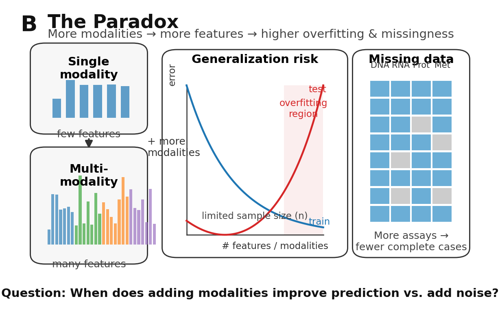
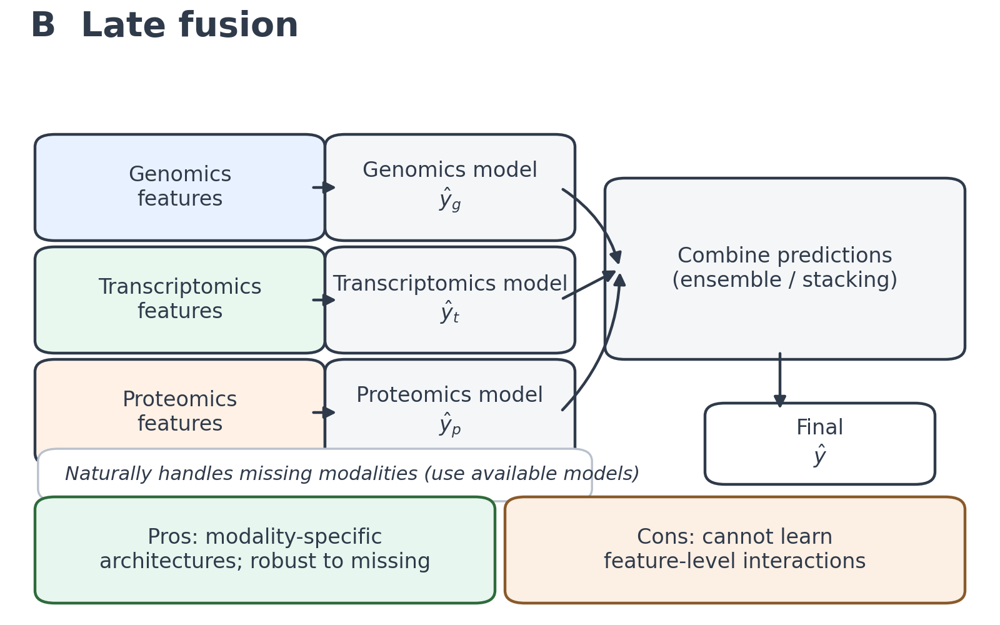
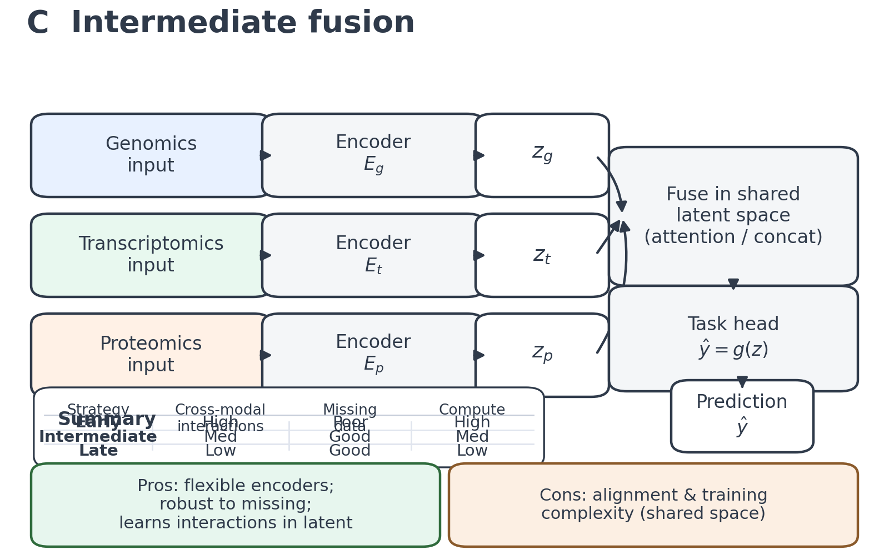
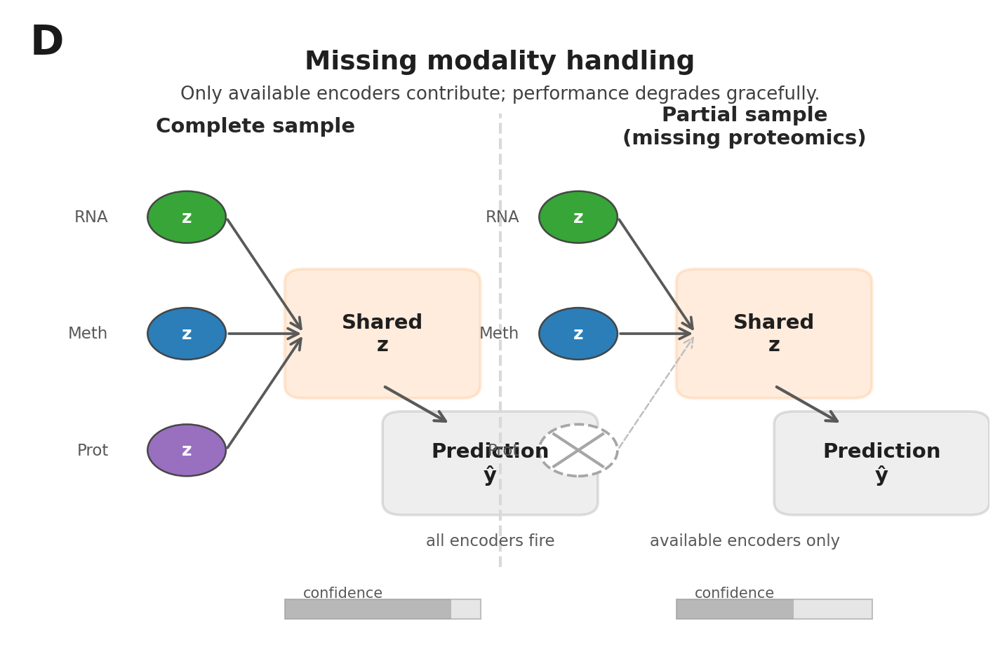
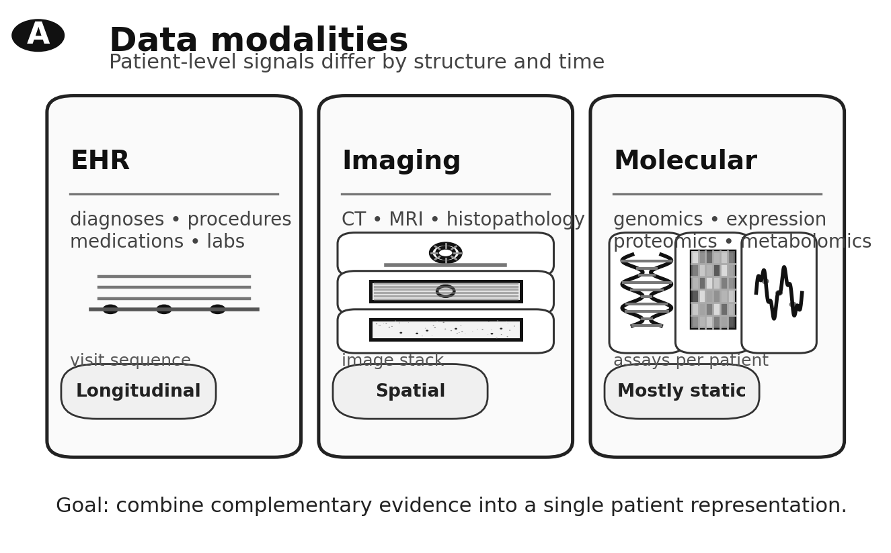
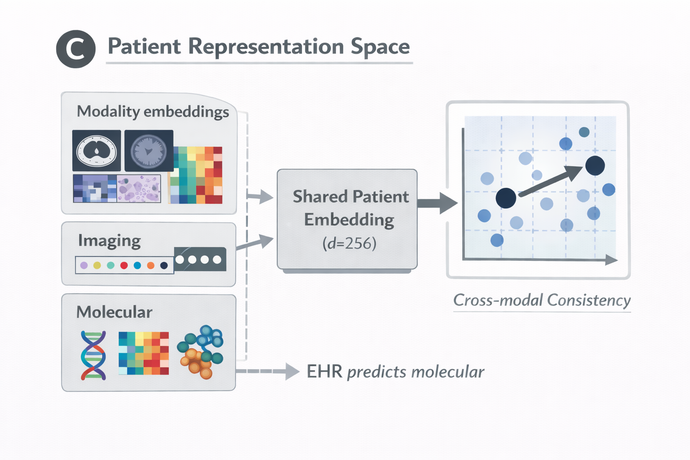
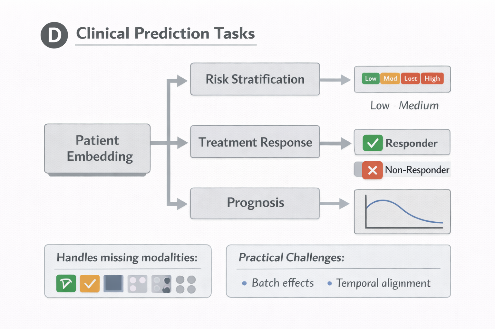
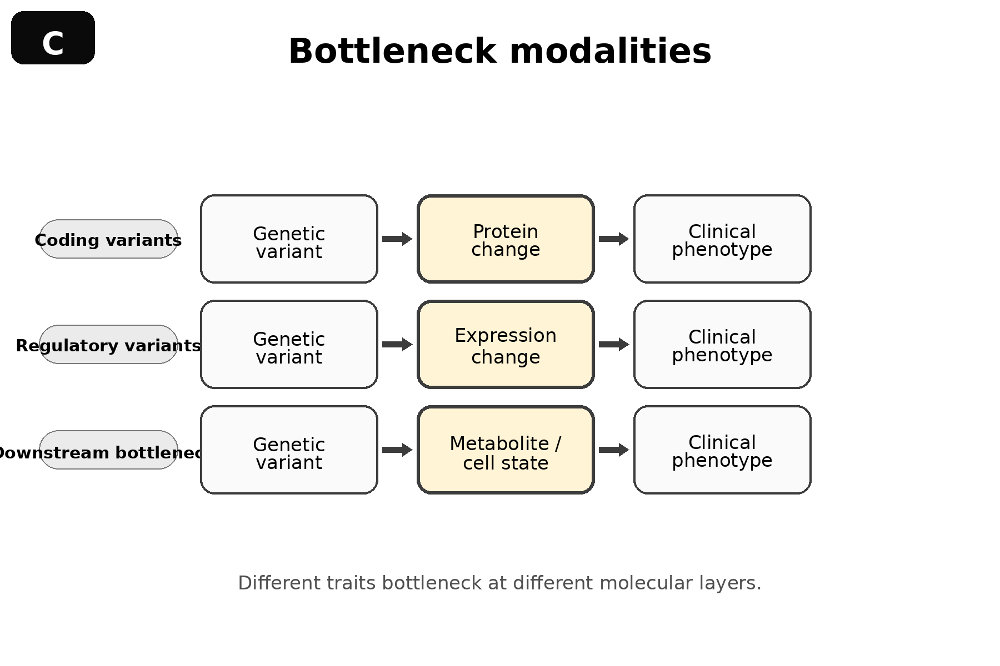
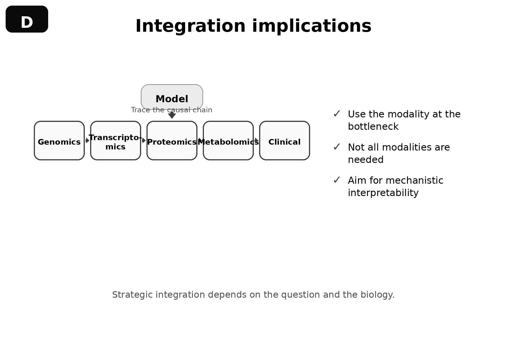

22 Multi-Omics Integration
Combining data types should improve prediction. If genomic variants provide one signal and transcriptomic measurements provide another, their combination ought to be more informative than either alone. This intuition, while reasonable, proves frequently wrong in practice. Naive concatenation of multi-omics features often degrades performance relative to single-modality models. Noise from uninformative features overwhelms signal from informative ones. Batch effects between modalities create spurious correlations that models exploit. The curse of dimensionality intensifies when features from multiple assays are stacked without principled integration. The paradox is real: more data can mean worse predictions, and understanding why is prerequisite to making multi-omics integration work.
Each molecular layer captures part of the biological story but not all of it. Genomic variants identify predisposition; transcriptomics reveals which genes respond; proteomics shows which proteins change; metabolomics measures downstream biochemical consequences. A patient with a BRCA1 variant may show altered DNA repair gene expression, deficient homologous recombination protein activity, and characteristic metabolic signatures. No single layer provides the complete picture. Effective integration traces this causal cascade from genetic variation through molecular intermediates to clinical phenotype, distinguishing primary effects from downstream consequences and noise from signal.




The integration strategy matters as much as the data itself. Early fusion concatenates features before modeling, intermediate fusion learns joint representations across modalities, and late fusion combines predictions from modality-specific models. Each approach carries distinct tradeoffs for different applications and data characteristics. Multi-omics foundation models attempt to learn unified representations across genomics, transcriptomics, proteomics, and other modalities simultaneously, while clinical integration extends further still, combining electronic health records, imaging data, and molecular measurements for patient-level prediction. The practical challenges are substantial: missing modalities when not every patient has every assay, batch effects from technical variation between measurement platforms, and a persistent gap between multi-omics potential and deployment reality.
22.1 Limits of Single-Modality Models
Each molecular layer tells an incomplete story. DNA sequence is static; it encodes potential but not state. A variant’s presence says nothing about whether the gene is expressed, whether the protein is active, or whether the pathway is perturbed. Transcriptomic data captures expression state but misses post-transcriptional regulation, protein modifications, and metabolic flux. Proteomic measurements reveal protein abundance but not necessarily activity or localization. Methylation profiles indicate epigenetic state but require expression data to understand functional consequences.
The incompleteness becomes concrete when modeling complex traits. Genome-wide association studies explain perhaps 10-20% of heritability for most common diseases through identified variants [Citation Needed]. Adding expression quantitative trait loci (eQTLs) improves fine-mapping by suggesting which variants affect gene expression (see Section 3.4), but many causal mechanisms operate through splicing, translation, or post-translational modification rather than expression level. Single-cell RNA sequencing reveals cellular heterogeneity invisible to bulk measurements, but the same cell cannot simultaneously undergo RNA-seq and assay for transposase-accessible chromatin sequencing (ATAC-seq), forcing computational integration across modalities measured in different cells (see Chapter 19 for approaches to this challenge).
Consider the challenge of predicting drug response. Germline variants in drug-metabolizing enzymes explain some inter-individual variation (see Section 2.8.4), but tumor-specific somatic mutations, expression programs, and microenvironment all influence therapeutic efficacy. A genomics-only model sees the inherited component; a transcriptomics-only model sees the current expression state; neither captures the full picture. Multi-omics integration promises to bridge these gaps by learning representations that span molecular layers.
Foundation models address each molecular layer individually: sequence models predict regulatory effects from DNA (see Chapter 16), expression models capture transcriptional programs (see Chapter 18), and protein language models predict structure and function from amino acid sequence (see Chapter 15). Multi-omics integration asks how these modality-specific representations can be combined into unified patient or cell representations.
The promise comes with caveats. Adding modalities increases the number of parameters that must be estimated, potentially worsening overfitting when sample sizes are limited. Different modalities have different noise characteristics, batch structures, and missingness patterns. The same patient’s measurements across platforms may not align perfectly due to sample handling, timing, or technical variation. Naive concatenation of features often performs worse than single-modality models because the signal-to-noise ratio degrades when noisy features outnumber informative ones.
These challenges motivate careful consideration of integration strategy. The question is not whether to integrate, but how.
22.2 Integration Strategies and Their Tradeoffs
Three broad strategies have emerged for combining multi-omics data, each with distinct strengths and limitations.



22.2.1 Early Fusion
Early fusion concatenates features from multiple modalities before any modeling, creating a single high-dimensional input vector that contains genomic variants, expression values, methylation levels, and any other available measurements. A classifier or regressor then learns directly from this concatenated representation.
The appeal of early fusion lies in its simplicity and flexibility. Any downstream model architecture can operate on concatenated features, from linear regression to deep neural networks. The model can learn arbitrary interactions between features from different modalities, since all information is present in the input. Implementation requires only normalization and alignment of features across samples.
The limitations become apparent at scale. Dimensionality explodes when combining genome-wide variants (millions of features), gene expression (tens of thousands of genes), methylation (hundreds of thousands of CpG sites), and protein abundance (thousands of proteins). Most samples have far fewer observations than features, creating severe overfitting risk. Regularization helps but cannot fully compensate when the ratio of features to samples exceeds practical bounds.
Missing data creates additional complications. If any modality is missing for a sample, early fusion requires either excluding that sample (reducing effective sample size) or imputing the missing modality (introducing noise and potential bias). Since multi-omics studies often have incomplete overlap between modalities, with some patients having genomics and transcriptomics but not proteomics, early fusion frequently operates on substantially reduced cohorts.
Scale differences between modalities pose another challenge. Expression values span orders of magnitude; methylation beta values range from zero to one; variant encodings are typically binary. Without careful normalization, modalities with larger variance can dominate the learned representation regardless of biological relevance. Batch effects within each modality add further complexity, since batch correction must precede concatenation but may interact with cross-modal relationships.
Despite these limitations, early fusion remains appropriate when sample sizes are large relative to feature counts, when all modalities are available for all samples, and when the downstream task is well-defined enough to guide feature selection. Biobank-scale studies with thousands of participants and focused feature sets can succeed with early fusion approaches.
22.2.2 Late Fusion
Late fusion trains separate models for each modality and combines their predictions at the output level. A genomics model produces a risk score; a transcriptomics model produces another risk score; an ensemble method or meta-learner combines these modality-specific predictions into a final output.
This approach handles missing modalities gracefully. If a patient lacks proteomic data, the proteomics model simply does not contribute to the ensemble. Sample sizes for each modality-specific model can differ, since training requires only samples with that modality rather than complete multi-omics profiles. Each modality can use whatever architecture works best for its data type: deep networks for imaging, gradient boosting for tabular omics, convolutional architectures for sequence.
Late fusion cannot capture cross-modal interactions at the feature level. If a variant’s effect on disease depends on expression level of a regulatory gene, neither the genomics model nor the transcriptomics model alone can detect this interaction. The ensemble sees only the modality-specific predictions, not the underlying features. This limitation is fundamental: late fusion assumes that each modality provides independent signal that can be additively combined.
The assumption of independence often fails in biological systems. Gene expression depends on genetic variants through eQTLs. Protein levels depend on both transcription and post-transcriptional regulation. Methylation states influence and are influenced by transcription. The molecular layers are not independent information sources but coupled components of a dynamic system. Late fusion ignores this coupling.
Calibration presents a practical challenge. For ensemble predictions to be meaningful, the modality-specific models must produce well-calibrated probability estimates (see Section 23.2 for calibration methods). If the genomics model is overconfident and the transcriptomics model is underconfident, naive averaging produces biased predictions. Calibration techniques help but add complexity to the modeling pipeline.
Late fusion works well when modalities genuinely provide independent signals, when sample sizes for each modality differ substantially, or when interpretability requires understanding each modality’s contribution separately. Clinical deployment often favors late fusion because it gracefully handles the reality that not all patients will have all measurements.
22.2.3 Intermediate Fusion
Intermediate fusion learns modality-specific encoders that map each data type into a shared latent space, then operates on the aligned representations for downstream tasks. This approach combines the flexibility of early fusion with the robustness of late fusion.
Each modality has its own encoder architecture tailored to its characteristics. A variational autoencoder might encode single-cell expression data, handling sparsity and dropout noise. A convolutional network might process methylation profiles along chromosomal coordinates. A graph neural network might encode protein interaction data (see ?sec-ch18-gnn-fundamentals). These diverse architectures share nothing except their output dimensionality: all encoders produce embeddings in a common latent space.
Alignment between modalities is encouraged through multiple mechanisms. Reconstruction losses require each encoder’s latent representation to support decoding back to the original features, ensuring that the embeddings retain modality-specific information. Contrastive terms pull together representations of the same biological entity across modalities: the expression embedding for a cell should be similar to the ATAC-seq embedding for the same cell. Graph constraints enforce consistency with known biological relationships: genes connected in interaction networks should have similar embeddings.
The shared latent space enables cross-modal reasoning. A classifier operating on the shared space can learn interactions between genomic and transcriptomic features, since both are present in the same representation. Transfer becomes possible: a model trained on expression data can be applied to samples with only ATAC-seq by encoding through the ATAC-seq encoder into the shared space.
Missing modalities no longer require imputation or exclusion. If a sample lacks proteomics, only the available encoders fire, producing a partial representation in the shared space. The downstream model operates on whatever representation is available, degrading gracefully as modalities are missing rather than failing entirely.
GLUE, introduced in ?sec-ch16-glue for single-cell multi-omics integration, exemplifies this approach. Separate variational autoencoders encode RNA-seq and ATAC-seq data into a shared cell embedding space. A feature graph links ATAC-seq peaks to genes based on genomic proximity and transcription factor binding, providing biological constraints on the alignment. The result enables integration of measurements from different cells, not just different modalities in the same cell.
Intermediate fusion dominates modern multi-omics deep learning because it balances flexibility with robustness. The modality-specific encoders can be pretrained on large single-modality datasets, then fine-tuned for alignment (see Chapter 9 for transfer learning strategies). New modalities can be added by training new encoders without retraining existing components. The shared space provides a natural target for interpretation and visualization.
The approach is not without limitations. The quality of alignment depends heavily on the training objective and the availability of paired samples where multiple modalities are measured in the same biological entity. Without sufficient anchoring, the shared space may fail to capture true biological correspondence. Hyperparameter choices for balancing reconstruction against alignment losses require careful tuning.



22.3 Multi-Omics Foundation Models
The foundation model paradigm, introduced in Chapter 13, extends naturally to multi-omics settings. Rather than training task-specific models that integrate modalities for a single downstream application, multi-omics foundation models learn general-purpose representations that transfer across tasks.
22.3.1 Factor-Based Integration
Multi-Omics Factor Analysis (MOFA and its successor MOFA+) provides a probabilistic framework for learning shared and modality-specific factors from multi-omics data [Citation Needed]. The approach assumes that observed measurements across modalities can be explained by a small number of latent factors, some shared across modalities and others specific to individual data types.
MOFA+ extends this framework to handle multiple sample groups (such as different tissues or conditions), non-Gaussian likelihoods appropriate for count data, and scalable inference for large datasets [Citation Needed]. The factors learned by MOFA+ capture sources of variation that span modalities, enabling biological interpretation: a factor that loads heavily on inflammatory genes in expression data and on hypomethylation at immune loci in methylation data suggests coordinated epigenetic-transcriptional regulation of inflammation.
While MOFA+ is not a deep learning method in the strict sense, its factor-based decomposition provides a foundation for understanding what multi-omics integration should capture. The shared factors correspond to biological processes that manifest across molecular layers; the modality-specific factors capture technical variation or layer-specific biology.
22.3.2 Deep Generative Multi-Omics Models
totalVI (Total Variational Inference) integrates protein abundance from CITE-seq with gene expression in single-cell data through a hierarchical Bayesian model [Citation Needed]. The approach learns a joint latent space that captures cell state while properly modeling the distinct noise characteristics of RNA and protein measurements. Protein abundance follows a negative binomial distribution with technical factors including background binding; RNA counts follow a zero-inflated negative binomial accounting for dropout.
The generative model structure enables imputation of missing modalities. Given RNA expression alone, totalVI can predict expected protein abundance by sampling from the learned joint distribution. This imputation is not mere correlation-based prediction but reflects the full posterior distribution over protein levels given expression.
MultiVI extends this framework to integrate gene expression with chromatin accessibility [Citation Needed]. The model learns to align measurements from different cells, enabling construction of unified cell atlases from studies that measured different modalities. The alignment relies on the biological assumption that gene expression and chromatin state reflect the same underlying cell state, even when measured in different cells.
These Bayesian deep generative models exemplify intermediate fusion with principled uncertainty quantification. The posterior distributions over latent variables capture not just point estimates but confidence in the learned representations (see Chapter 23 for uncertainty quantification methods). This property becomes important for clinical applications where prediction uncertainty must inform decision-making.
22.3.3 Contrastive Multi-Modal Learning
Contrastive learning provides another path to multi-omics integration. The CLIP model for vision-language demonstrated that contrastive objectives can align embeddings from fundamentally different data types (images and text) into a shared space [Citation Needed]. Similar approaches apply to biological modalities.
The contrastive objective is straightforward: embeddings of the same biological entity across modalities should be similar, while embeddings of different entities should be dissimilar. A cell’s expression embedding should be close to its methylation embedding and far from other cells’ methylation embeddings. A patient’s genomic embedding should be close to their transcriptomic embedding across the cohort.
This objective requires paired samples for training: the same cells or patients measured across modalities. Anchor pairs define the positive examples; negative examples come from non-matching pairs within a batch. The encoders learn to produce embeddings where cross-modal correspondence emerges from training dynamics rather than explicit feature engineering.
Contrastive approaches scale well and can incorporate foundation model encoders pretrained on single modalities. An expression encoder pretrained on millions of cells via masked gene prediction can be fine-tuned with contrastive objectives to align with an ATAC-seq encoder. The pretraining provides rich initial representations; the contrastive fine-tuning establishes cross-modal correspondence (see Section 8.5 for contrastive pretraining strategies).
22.4 Clinical Integration: EHR, Imaging, and Molecular Data
The ultimate goal of multi-omics modeling for many applications is patient-level prediction: disease risk, treatment response, prognosis. Achieving this goal requires integrating molecular measurements with clinical data that directly captures patient state and outcomes.
22.4.1 Electronic Health Records as a Modality
Electronic health records contain decades of longitudinal observations for millions of patients: diagnoses, procedures, medications, laboratory values, vital signs, clinical notes. This wealth of phenotypic information complements molecular data by capturing disease manifestation rather than molecular mechanism.
Integrating EHR with genomics poses distinct challenges. The data types differ fundamentally: structured codes, continuous lab values, free-text notes, and time-stamped events versus static or slowly-changing molecular measurements. Temporal structure matters: the sequence of diagnoses and treatments contains prognostic information that static snapshots miss. Missingness is informative: the absence of a laboratory test may indicate that a clinician deemed it unnecessary, which itself conveys information about patient state (Section 2.7.2). The phenotype quality challenges introduced there cascade through multi-omics integration, where EHR-derived labels may introduce systematic biases that ?sec-ch22-label-bias examines in detail.
Foundation models for EHR data learn representations from the longitudinal event sequences. These models, often based on transformer architectures that process sequences of medical codes (see Chapter 7), capture temporal dependencies and co-occurrence patterns in clinical trajectories. The resulting patient embeddings encode disease state and prognosis in a form amenable to integration with molecular data.
Combining EHR embeddings with genomic features requires handling the different temporal scales. Genetic variants are constant throughout life; EHR observations accumulate over years. The integration must determine which clinical observations are relevant to a given molecular measurement, accounting for the time between sample collection and clinical events.
22.4.2 Imaging Integration
Medical imaging provides spatial information that molecular assays lack. A CT scan reveals tumor location, size, and heterogeneity; histopathology slides show cellular morphology and tissue architecture; MRI captures organ structure and function. These spatial data complement molecular measurements that aggregate over dissected tissue regions.
Radiogenomics links imaging features to genetic and molecular characteristics. Glioblastoma tumors with specific imaging signatures have distinct methylation patterns and expression programs [Citation Needed]. Radiomic features extracted from CT scans correlate with mutational burden and immune infiltration in lung cancer [Citation Needed]. These associations enable prediction of molecular state from non-invasive imaging, potentially guiding treatment decisions when biopsy is impractical.
Foundation models for medical imaging, pretrained on millions of scans through self-supervised objectives, provide rich representations for downstream tasks [Citation Needed]. Integrating these imaging embeddings with molecular data follows the intermediate fusion paradigm: modality-specific encoders produce representations in a shared latent space where multi-modal classifiers operate.
The integration must account for correspondence between imaging regions and molecular samples. A tumor may be molecularly heterogeneous, with different subclones in different spatial locations. A biopsy samples one location; imaging captures the entire lesion. Alignment requires either spatial registration of biopsy location to imaging coordinates or acceptance that the correspondence is imperfect.
22.4.3 Multi-Modal Clinical Prediction Models
Combining EHR, imaging, and molecular data for clinical prediction follows the intermediate fusion pattern. Each data type has a specialized encoder: a transformer for longitudinal EHR events, a vision encoder for imaging, domain-specific encoders for expression, methylation, and other molecular modalities. All encoders produce embeddings in a common patient representation space.
The training objective typically combines modality-specific reconstruction losses with alignment terms that encourage consistency across data types. A patient’s EHR embedding should be predictive of their molecular state; their imaging embedding should be consistent with their clinical trajectory. Downstream classifiers for outcomes like survival, treatment response, or disease progression operate on the combined representation.
Missing modalities are common in clinical settings. Not all patients have genomic data; imaging may be unavailable for some conditions; the depth of EHR history varies by healthcare system and patient engagement. Multi-modal clinical models must handle this missingness gracefully, producing useful predictions from whatever data are available while leveraging cross-modal information when present.
The clinical deployment path for such models requires validation on external cohorts, prospective evaluation, and regulatory clearance. These practical considerations, addressed in Chapter 27, shape model development from the outset. A model that performs well on a research cohort but requires modalities unavailable in clinical workflows provides little value. The practical deployment considerations, including feature availability and model calibration requirements, are examined in Section 27.3.




22.5 Systems View: From Variant to Phenotype
Multi-omics integration gains conceptual clarity from a systems biology perspective that traces information flow from genetic variation through molecular intermediates to clinical phenotypes. This cascade view organizes the molecular layers into a causal hierarchy and identifies where integration should occur.
22.5.1 Information Cascade
Genetic variants are the starting point: heritable differences in DNA sequence that perturb downstream molecular processes. Some variants directly alter protein structure through missense or nonsense mutations. Others affect regulation: promoter variants change expression level, splice site variants alter transcript isoforms, enhancer variants modulate tissue-specific expression.
These primary effects propagate through molecular layers. Expression changes alter the cellular protein complement. Protein level changes affect enzyme activity, signaling cascades, and transcriptional feedback. Metabolic flux shifts in response to enzyme availability. Cell behavior changes as the integrated molecular state crosses thresholds for proliferation, differentiation, or death.
Tissue-level phenotypes emerge from cellular behavior aggregated across the organ. Tumor growth reflects altered cell proliferation; fibrosis reflects aberrant extracellular matrix deposition; inflammation reflects immune cell recruitment and activation. These tissue phenotypes manifest as clinical symptoms, laboratory abnormalities, and imaging findings.
The cascade view suggests where different modalities provide information. Genomics captures the inherited potential and somatic alterations. Transcriptomics and epigenomics capture the current regulatory state. Proteomics and metabolomics capture the functional molecular complement. Clinical data captures the phenotypic consequences.




22.5.2 Bottleneck Modalities
Not all modalities are equally informative for all questions. The concept of bottleneck modalities identifies which molecular layers most directly mediate the relationship between genetic variation and phenotype.
For many coding variants, protein structure is the bottleneck. A missense variant’s effect on disease depends primarily on how it alters protein function, which depends on how the amino acid substitution affects folding, stability, and activity. Expression level matters less than structural consequence. Protein language models that predict structural effects from sequence directly address this bottleneck (see Chapter 15).
For regulatory variants, expression is closer to the bottleneck. An enhancer variant affects disease through its effect on target gene expression, which affects downstream processes. Chromatin accessibility and transcription factor binding are intermediate steps; expression level is the more proximal readout. Models that predict expression effects from sequence address this bottleneck (see Chapter 16).
For some phenotypes, the bottleneck may lie downstream of molecular measurements entirely. Behavioral traits depend on neural circuit function that emerges from complex cellular and network dynamics. Metabolic traits depend on flux through interconnected pathways that may not be apparent from enzyme abundance alone. These cases suggest that molecular measurements provide incomplete information regardless of integration sophistication.
22.5.3 Causal vs. Correlational Integration
Multi-omics data are pervasively correlated. Genes in the same pathway have correlated expression. Methylation and expression are anti-correlated at many promoters. Clinical variables cluster by disease category. These correlations can improve prediction even without causal understanding.
Causal integration seeks to identify the mechanistic relationships between molecular layers. If a variant causes reduced expression, which causes protein deficiency, which causes metabolic dysfunction, this causal chain suggests intervention targets: expression restoration or enzyme supplementation might address the downstream effects. Correlational integration might achieve the same predictive performance without identifying this chain, since all layers correlate with the phenotype.
Distinguishing causal from correlational relationships requires experimental perturbation or careful causal inference from observational data. Mendelian randomization uses genetic variants as instruments to infer causal effects of expression on outcomes (see Section 3.9 for integration of GWAS with mechanism). CRISPR screens directly perturb gene function and measure consequences. Multi-omics integration methods increasingly incorporate causal assumptions or validation against perturbation data.
The distinction matters for interpretation and intervention. A predictive model based on correlations may fail when the data distribution shifts (see Chapter 12) or when interventions alter the causal structure. A causally informed model captures mechanism that persists across contexts.
22.6 Handling Missing Modalities
Real-world multi-omics data are incomplete. Different studies measure different modalities. Within studies, technical failures, sample limitations, and cost constraints create missing data. Clinical deployment must handle patients with incomplete molecular profiles. Robust multi-omics methods must address missingness directly.
22.6.1 Training with Incomplete Data
Intermediate fusion architectures handle missing modalities naturally during inference: only the available encoders contribute to the shared representation. Training is more complex because alignment terms require paired measurements across modalities.
One approach trains on the subset of samples with complete data, then applies the trained encoders to samples with partial data during inference. This wastes information from the samples with incomplete profiles and may learn representations that fail to generalize to the missing-modality setting.
A better approach incorporates missingness into training. Modality dropout randomly masks modalities during training, forcing the model to learn representations robust to missing inputs. The reconstruction and alignment losses are computed only for available modalities, so samples with partial data can still contribute to training.
Curriculum learning strategies may first train with complete data to establish alignment, then gradually increase modality dropout to improve robustness. The balance between alignment quality (which benefits from complete data) and robustness (which requires training on partial data) requires empirical tuning.
22.6.2 Cross-Modal Imputation
Intermediate fusion enables principled imputation of missing modalities. Given a sample’s available modalities encoded into the shared latent space, decoders for missing modalities can predict expected values. If a patient has expression data but not methylation, the expression encoder produces a latent embedding, and the methylation decoder generates predicted methylation values from that embedding.
The imputation quality depends on how well the shared space captures the biological factors underlying both modalities. If expression and methylation reflect the same cell state, the imputation may be accurate. If they capture distinct aspects of biology, imputation will smooth over true variation.
Uncertainty in imputation matters for downstream use. Point estimates of missing values provide no indication of confidence. Generative models that produce distributions over missing values enable propagation of uncertainty through downstream analyses (see Section 23.4). A risk prediction that depends heavily on imputed values should have wider confidence intervals than one based entirely on measured data. The selective prediction and uncertainty communication strategies that could implement this appropriate caution are developed in Section 23.7.
22.6.3 Zero-Shot Cross-Modal Transfer
The most ambitious application of multi-omics integration is zero-shot prediction across modalities: using a model trained on one set of modalities to make predictions for samples measured with entirely different modalities.
This transfer relies on the shared latent space capturing biological state independently of measurement modality. If the space truly represents cell state, then a classifier trained on expression-derived embeddings should work on ATAC-seq-derived embeddings, since both encoders map to the same biological meaning. The alignment training enables this transfer by ensuring that the same biological entity maps to the same latent location regardless of which modality was measured.
Zero-shot transfer is rarely perfect. The modalities may capture somewhat different aspects of biology, and the alignment may be imprecise. But partial transfer can still be valuable: a model achieving 80% of supervised performance without any labeled examples in the new modality saves substantial annotation effort (see ?sec-ch09-zero-shot for zero-shot transfer in other contexts).
22.7 Practical Challenges
The gap between multi-omics potential and deployed reality reflects obstacles that compound across modalities. Technical variation that is manageable within a single assay type becomes intractable when batch structures differ across genomics, transcriptomics, and proteomics. Sample sizes that support single-modality analysis may be insufficient when the effective dimensionality grows with each added data type. Interpretability, already challenging for deep learning on individual modalities, becomes harder still when attributions must be compared across features with different scales and semantics. These practical challenges determine whether integration improves predictions or merely adds complexity.
22.7.1 Batch Effects Across Modalities
Batch effects, systematic technical variation between experimental batches, are endemic in high-throughput biology. Multi-omics integration faces compounded batch effects: each modality may have its own batch structure, batches may be correlated or anti-correlated across modalities, and batch correction methods designed for single modalities may not extend to multi-modal settings.
Consider a study where expression data were generated at three sequencing centers and proteomics data were generated at two mass spectrometry facilities. The batch effects in each modality are independent. Samples from expression batch 1 are spread across proteomics batches. Correcting expression batch effects does not address proteomics batch effects, and vice versa.
Integration must either correct batch effects within each modality before combining (risking removal of real biology that correlates with batch) or incorporate batch as a covariate in the integrated model (requiring that batch structure be known and modeled correctly). Domain adaptation techniques treat batches as domains and learn representations invariant to domain while retaining biological signal. The systematic strategies for detecting batch-driven confounding appear in ?sec-ch22-detection, while mitigation approaches including adversarial domain adaptation are detailed in ?sec-ch22-mitigation.
22.7.2 Sample Size and Power
Multi-omics studies typically have smaller sample sizes than single-modality studies due to cost constraints. Each additional modality increases per-sample cost, trading breadth for depth. This tradeoff has implications for statistical power and model complexity.
The effective sample size for multi-omics integration may be smaller than for any single modality. If 1000 patients have expression data and 800 have methylation data but only 600 have both, intermediate fusion sees 600 fully informative samples. Late fusion can use all 1000 expression samples and all 800 methylation samples, avoiding the intersection penalty.
Power analyses for multi-omics studies must account for the specific integration strategy and the expected missingness pattern. A study designed for early fusion needs larger sample sizes (relative to feature count) than one designed for late fusion. Grant applications and study planning should explicitly consider how integration choices affect required sample sizes.
22.7.3 Interpretability Across Modalities
Multi-omics models compound the interpretability challenges inherent in deep learning. When a model predicts disease risk from integrated genomic, transcriptomic, and proteomic features, clinicians need to understand which modalities and which features drive the prediction. A black-box risk score, however accurate, provides little guidance for understanding mechanism or identifying intervention targets.
Attribution methods that work for single-modality models do not automatically extend to multi-modal settings (see Chapter 24 for attribution methods). Gradient-based attribution can identify important features within each modality, but comparing importance across modalities requires careful normalization. A genomic variant and an expression value operate on different scales with different effect size distributions; raw attribution scores are not directly comparable.
The intermediate fusion architecture offers some interpretability advantages. The shared latent space can be visualized to understand how samples cluster and which modalities contribute to separation. Attention weights in cross-modal transformers indicate which features from each modality the model considers when making predictions. Modality ablation studies quantify each data type’s contribution to overall performance.
Biological interpretability requires connecting learned representations to known biology. Do the latent dimensions correspond to pathways, cell types, or disease processes? Are cross-modal attention patterns consistent with known regulatory relationships? These questions demand validation against external biological knowledge, not just introspection of model parameters.
22.7.4 Evaluation Complexity
Evaluating multi-omics models is more complex than evaluating single-modality models. Multiple dimensions of performance matter: prediction accuracy, calibration, cross-modality transfer, robustness to missing modalities, biological plausibility of learned representations, and clinical utility.
A model might achieve high prediction accuracy by memorizing batch effects or leveraging shortcuts in the data. Evaluation should include cross-batch and cross-cohort validation to assess generalization (Chapter 12), with particular attention to homology-aware splitting strategies (Section 12.2) that prevent information leakage across data partitions. Ablation studies that remove each modality quantify the contribution of each data type and identify whether the model genuinely integrates information or relies predominantly on one modality.
Biological validation through comparison to known biology provides another evaluation axis. Do the learned factors correspond to known pathways? Are attention patterns consistent with regulatory relationships? Do imputed values match held-out measurements? These checks assess whether the model captures biological signal rather than technical artifacts.
Clinical evaluation, addressed in Chapter 27, requires prospective validation in real deployment settings. A model that improves prediction in research cohorts may not improve clinical decisions if the predictions do not change management or if the required modalities are unavailable in clinical workflows.
22.8 Integration as Means, Not End
Multi-omics integration is not an end in itself but a means to improved prediction, understanding, and intervention. The integration strategies and foundation models surveyed here produce representations; downstream applications convert those representations to actionable outputs. Risk prediction combines multi-omic embeddings with clinical variables for individualized prognosis. Treatment response models predict which patients will benefit from specific therapies based on their integrated molecular profiles. Drug discovery uses multi-omics to inform target identification and patient stratification for clinical trials (see Chapter 29). In each case, integration provides the substrate; clinical or scientific goals provide the purpose.
The systems view that multi-omics enables shapes how predictions should be interpreted. A risk prediction based on integrated features inherits explanatory power from the causal relationships linking molecular layers to phenotype. Understanding which modalities drive predictions, and how those modalities relate to underlying biology, supports clinical reasoning about mechanism and intervention. This explanatory capacity distinguishes multi-omics from single-modality approaches that may predict equally well but provide less insight into why predictions succeed or fail.
The path from research models to clinical deployment requires addressing practical challenges that intensify with integration: batch effects across modalities and institutions, missing measurements that differ systematically across patients, sample size limitations that grow with feature dimensionality, and evaluation complexity when outcomes depend on multiple data types. The clinical applications examined in Chapter 27 and Chapter 28 confront these realities. As the field advances toward whole-patient foundation models that jointly encode genomics, transcriptomics, proteomics, imaging, and clinical data, the integration principles established here provide the foundation. The trade-offs between fusion strategies, the importance of shared latent spaces, the challenge of missing modalities, and the systems biology perspective on information flow will remain relevant as scale and scope expand. The interpretability challenges that compound across modalities (Chapter 24) and the calibration requirements for clinical deployment (Section 23.2) add further dimensions that shape how multi-omics models should be developed and evaluated.